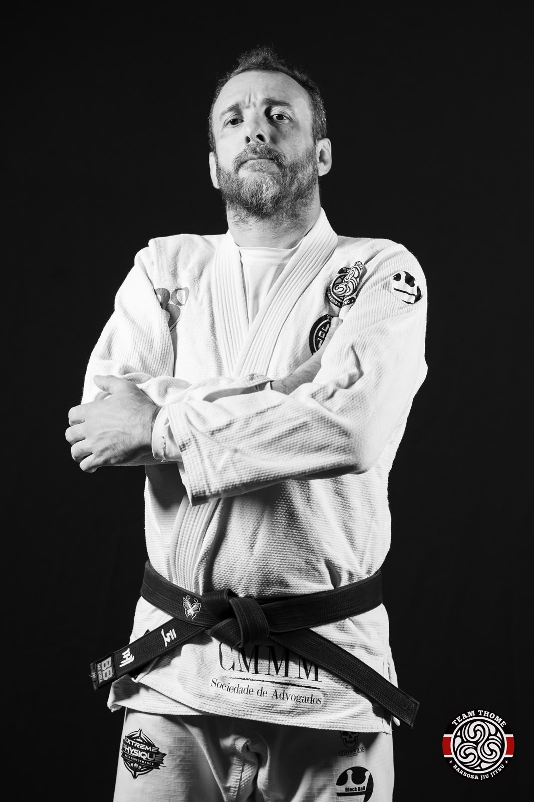

À frente da nossa equipe
Filipe Thomé
Líder e fundador da Team Thomé
Team Thomé B9 — Barbosa Jiu-Jitsu
Com uma trajetória iniciada no judô, Thomé encontrou no jiu-jítsu uma forma de unir sua experiência nas artes marciais ao compromisso de ensinar e contribuir para o desenvolvimento de pessoas.
- Jiu-jítsu desde
- 2003
- Ensina desde
- 2010
- Faixa preta desde
- 2014
Das primeiras aulas à própria equipe
Uma história de aprendizado e ensino
O contato de Thomé com as artes marciais começou aos seis anos, no judô. A experiência acumulada na modalidade e, depois, no jiu-jítsu tornou-se a base de sua atuação como professor.
-
1986
Início no judô
Começou a treinar na Academia Mito, aos seis anos, e permaneceu no judô até os 23. As competições fizeram parte desse período de aprendizado.
-
2003
Chegada ao jiu-jítsu
Iniciou a prática na equipe Alliance, abrindo uma nova etapa em sua trajetória nas artes marciais.
-
2007
Treinos com Marco Barbosa
Ainda na faixa azul, passou a treinar com Barbosa, que posteriormente o graduaria à faixa preta.
-
2010
Primeiras experiências como professor
Na faixa roxa, começou a dar aulas de judô e jiu-jítsu em um condomínio, desenvolvendo sua prática de ensino.
-
2014
Conquista da faixa preta
Recebeu de Marco Barbosa a graduação à faixa preta de jiu-jítsu.
-
2017
Fundação da Team Thomé
Fundou a Team Thomé B9, filial da Barbosa Jiu-Jitsu, dando continuidade ao seu trabalho de ensino.
Formação multidisciplinar
Formação e desenvolvimento humano
-
Direito
Advogado e pós-graduado em Direito Tributário.
-
Educação Física
Bacharel em Educação Física.
-
Psicopedagogia
Pós-graduado em Psicopedagogia, com especialização no ensino de pessoas com necessidades especiais.
Formação apresentada conforme as informações fornecidas pelo professor.
Trajetória competitiva
Principais títulos
-
Campeão do Circuito Paulista
2023/24
-
Campeão Paulista NoGi
Título na modalidade sem kimono.
-
Campeão Grandes Mestres
Uma das conquistas de sua trajetória competitiva.
Sua trajetória também inclui diversos títulos e pódios pela FPJJ e pela CBJJ.
O propósito que orienta a equipe
Jiu-jítsu como caminho de transformação
À frente da Team Thomé, Filipe busca contribuir para a vida dos alunos por meio da prática. Seu ensino valoriza tanto o aprendizado no tatame quanto a confiança, a disciplina e o respeito que podem acompanhar cada pessoa em seu dia a dia.
- Confiança
- Disciplina
- Respeito
- Superação